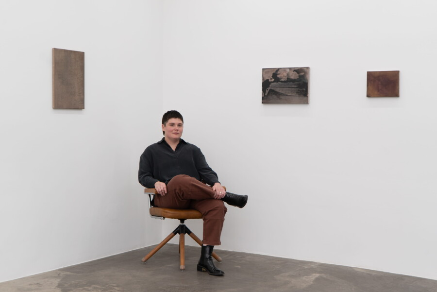

Noelle Africh, “Signal” Artist Talk
Twelve Ten Gallery invites you to an artist talk with Noelle Africh on the occasion of their first solo exhibition with the gallery. Their exhibition, “Signal”, explores the mutability of distemper, a medium historically associated with decorative painting, but here transformed into an opaque surface through which the artist investigates the emergence of form.
Presented in a conversational format with Chicago-based writer and curator Elizabeth Lalley, Africh and Lalley will explore the development of Africh’s practice. To be followed by a reception with refreshments and socializing. Space is limited.
Please RSVP.
Noelle Africh (b. 1992 Chicago, IL) lives and works in Chicago, IL. They received an MFA in Painting and Drawing from The School of the Art Institute of Chicago and a Bachelor of Science degree in Mathematics from the University of Illinois in Urbana-Champaign. Solo exhibitions include “Signal”, Twelve Ten (Chicago, IL), “Superstition”, Slow Dance (Chicago, IL) and “Loomer”, SHED Projects (Cleveland, OH). They have also participated in many group exhibitions including at Galerie Gisela Clement (Bonn, Germany), RUSCHWOMAN (Chicago, IL), Hyde Park Art Center (Chicago, IL), The Plan (Chicago, IL), The Green Gallery – West (Milwaukee, WI), and Patient Info (Chicago, IL), among others. They have a forthcoming two-person at No31 (Duns, Scotland) in 2026.
Elizabeth Lalley is a Chicago-based writer, independent curator, and floral designer. She is the director of Slow Dance (www.slow-dance.space) a curatorial project and exhibition space, currently on hiatus. Previously, she was the Curatorial Director of Goldfinch Gallery and has curated exhibitions at ACRE Projects, Heaven Gallery, and the Terrain Biennial. She is interested in interdisciplinary approaches to curatorial practice that explore visual culture on a spectrum of production and presentation. She is committed to writing “alongside” art, as Lynne Tillman once put it, while her poetry and creative prose are concerned primarily with ghosts, plants, and the Midwestern landscape. She holds a Master of Arts in Museum & Exhibition Studies from the University of Illinois-Chicago and a BA in English Literature and Creative Writing from the University of Michigan.